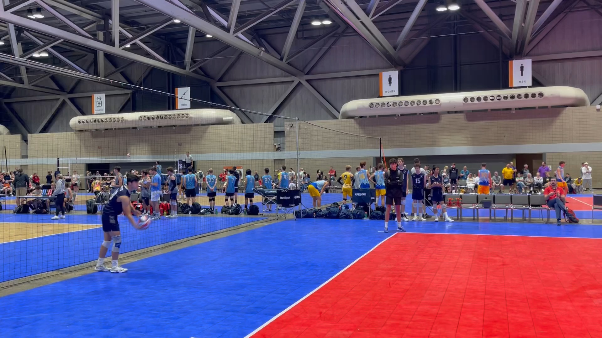

A jump serve: the player leaves the ground and makes contact with the ball at a higher point in order to increase power and effectiveness. While it’s a difficult skill to master, players with a great jump serve can take control of matches. The first player to popularize the jump serve technique was Renan Dal Zotto during the 1984 Olympics. Renan Dal Zotto is a former outside hitter of the Brazilian national team who’s revolutionary serve helped them take home the silver medal that year.

[click on the image to stop/resume the animation]
How to make a good jump serve?
Key-1: Clear Your Head. The goal here is to start the same way every single time in order to breed consistency. Great jump servers are consistent. You can’t be a great jump server if you only get the ball in play one out of ten times.
Key-2: The Toss.Starting about 10 feet behind the end line in order to give yourself enough room for your approach. Release the volleyball as high as possible and flick your wrist upwards letting the ball roll off of the tips of your fingers. This creates topspin which greatly impacts the flight of the ball and could ultimately determine if your serve lands in or out.
Key-3: The Approach.The jump serve approach is essentially the same as your hitting approach but instead of doing it at the net, you’re doing it behind the service line. Your approach will create momentum which in turn gets released into the ball at impact. This maximizes your power and increases the speed of the serve (making it much more effective).
Key-4: The Impact.As you launch yourself into the air, use your left hand as a guide while pulling your right arm back like a bow and arrow (similar to the logo of AVP). Once the ball comes down, move your guide arm and release your hitting arm creating power with your core. The most important part about making contact with the volleyball is that you do so with your hitting arm fully extended. Do this by striking the volleyball at its highest point. Not only does this create a better angle on your jump serve, but it also limits mishits.
Key-5: Follow Through.Following through is vital to the completion of almost every single athletic movement in almost every single sport that you can think of. Not only will it help you get the results that you’re looking for but it is also a great way to prevent injury!Continue your arm swing well after contact and let it slow down naturally.
Practice Tips:
Practice your toss until you can replicate it every time. The biggest mishap when it comes to jump serves are timing related so perfecting your toss is 100% necessary. A toss that’s too high or too low will surely mess up your timing and more than likely result in a service error.
Contact the middle/top of the volleyball with an open hand and snap your wrist to create additional topspin. If you fail to snap your wrist, you may end up sending the ball well past the opposing team’s end line, therefore, losing the point.
From an injury standpoint, there’s a lot to be aware of. Stopping after contact means you’re actively using your muscles to slow down the momentum of your arm. This can have negative impacts on your rotator cuffs and lead to unnecessary tendinitis down the line. Do yourself a favor and finish your swing. Then the last thing you need to worry about is getting ready to play defense!
Good Examples
playback speed:
Best Jump Serves in Volleyball History
Float Serve
A float serve is a type of serve wherein the ball does not spin.This makes it unpredictable, and thus, more difficult to pass. It can go left, right or even drop abruptly. A properly executed float serve in volleyball gives your team a competitive edge. Regardless of the position you play, it’s crucial to learn and master this serve.
the ball is not rotating
the ball trajectory is unpredictable
How to make a good float serve?
Key-1: The first thing to focus on is the arm. It should be stretched out directly in front of the player. The ball should be resting at shoulder height in the player’s hand.
Key-2: The next key point is the toss. When the player tosses the ball up, it should be low and controlled. It should always land in front of the server’s back foot and in line with the serving shoulder.
Key-3: The most important thing is contact. When the ball is tossed in front of the serving shoulder, it is important to make contact with an open palm.And remember no fingers on the ball. Making contact right in the center of the ball is vital to a successful float serve. Keeping the ball toss and contact in line with the serving shoulder will generate the most power and control.
Practice Tip:A good drill to perfect this skill is by practicing with a volleyball and a wall. Stand in front of the wall at arm’s length. Toss the ball up directly in line with the wall without hitting it. Make a serve and pin the ball against the wall on contact. The goal is to contact the ball directly in the center with just the open palm.